בשבוע שעבר לחצנו Load וטענו את הנתונים כמו שהם. היום לוחצות על הכפתור השני, Transform Data,
ונכנסות לחדר שבו רואים בשנייה אחת מה שבור בטבלה של אלפי שורות. מגלות, מתקנות תיקון ראשון, ורואות בדוח מה השתנה.
שאלה
←
איסוף נתונים
←
טיוב והכנה
←
ניתוח
←
הצגה
←
החלטה
לא היית במיט?
עברי על שלבים 0–1 עם ההקלטה, ואחר כך עשי את כרטיס החדר לבד. החדרים עצמם לא מוקלטים, ולכן הכרטיס כתוב כך שאפשר לעבוד איתו לבד.
בכל כלי נתונים, מאקסל ועד המערכות של חברות ענק, הנתונים עוברים שלוש תחנות בדרך לדוח. באנגלית קוראים לזה ETL.
EExtract · מוציאותלוקחות את הנתונים מהמקור. אצלנו: הקובץ שתחנת הדלק שלחה.
בפאוור BI: Get data
←
TTransform · מתקנותבודקות מה שבור ומתקנות, לפני שמישהו מחשב משהו.
בפאוור BI: פאוור קוורי (Transform Data)
←
LLoad · טוענותמעבירות את הנתונים המתוקנים לדוח, ושם בונות גרפים.
בפאוור BI: Close & Apply
מה עשינו בשבוע שעבר? לחצנו Load ישר מה־Navigator: E ומיד L, בלי T.
הנתונים הגיעו לדוח כמו שהם, עם כל מה שבור בהם. אם הגרף על המסד שלכן יצא מוזר, זו הסיבה.
למה ה־T הוא הלב? בנתוני התדלוק יש 2,905 תדלוקים. באחד מהם כתוב 50,000 ליטר, ואף רכב לא מתדלק כמות כזאת.
בלי T, הממוצע בדוח הוא 57 ליטר לתדלוק. בלי השורה הזו, 40. שורה אחת מתוך כמעט 3,000 שינתה את המספר שהתחנה תחליט לפיו.
י״ב: ה־T הוא פרק הטיוב בעבודה שלכן. י״א: ה־T הוא השלב ״טיוב והכנה״ בפס מחזור הנתונים שבראש הדף.
ב־T יש ארבעה סוגים של פעולות. היום נוגעות בשתיים:
לנקותמוחקות כפילויות ושורות ריקות. בתדלוק: ארבעה קודים שמופיעים פעמיים.
להמירמשנות סוג נתונים. מחיר הופך ל״כסף״, ותאריך שנשמר כטקסט הופך לתאריך.
לסנןמשאירות רק את מה שהשאלה צריכה: תקופה, סוג, אזור.
שלב 1 · עושות יחד · תדלוק רכביםהחדר שבין האקסל לדוח
תחנת דלק רשמה כ־2,900 תדלוקים. לפני שבונות עליהם דוח, בודקות אם אפשר לסמוך עליהם.
הצילומים בשלב הזה צולמו על נתוני ההזמנות, ולכן שמות העמודות בהם שונים. החלונות והכפתורים זהים.
1.1נכנסות לפאוור קוורי
חלון Power Query Editor פתוח על נתוני התדלוק.
איך עושים
מורידות את הקובץ תדלוק רכבים.xlsx, ומעבירות אותו מ״הורדות״ לתיקייה Power BI\שיעור 2.
Home › Get data › Excel workbook.
בוחרות את תדלוק רכבים.xlsx ולוחצות Open.
ב־Navigator מסמנות את הטבלה טבלת_תדלוקים.
לוחצות Transform Data. לא Load.
מה אמור להופיע?
חלון חדש, Power Query Editor, ובו ארבעה חלקים:
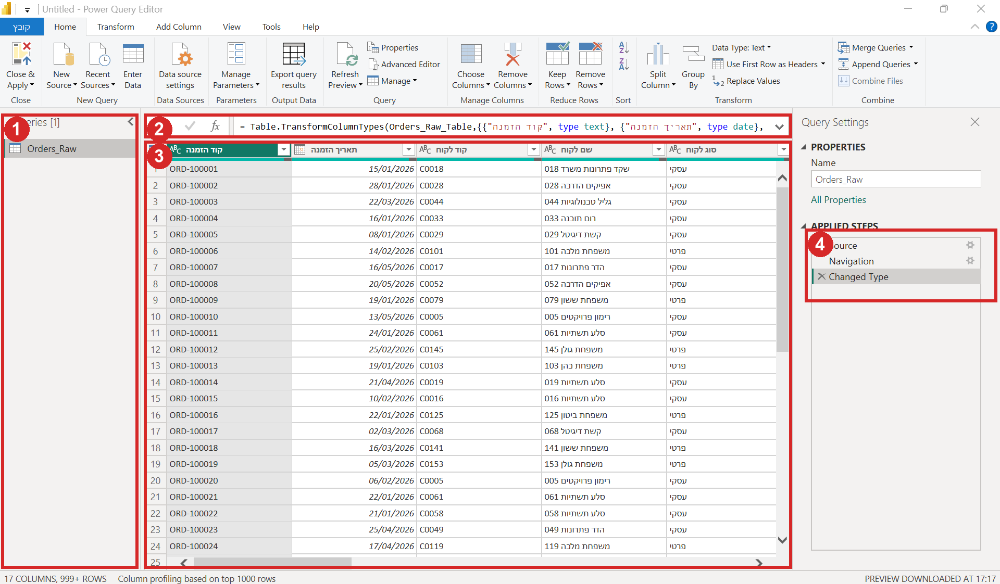
1 — השאילתות (כל טבלה היא שאילתה). 2 — שורת הנוסחה: מה השלב הנוכחי עושה. 3 — הנתונים. 4 — Applied Steps: יומן של כל מה שעשינו.
Applied Steps הוא יומן. כל פעולה נרשמת כשלב, ופאוור BI מריץ את כל השלבים מחדש בכל פעם שהנתונים מתעדכנים.
לא צריך לזכור מה עשינו. זה כתוב שם, לפי הסדר.
שני חלונות פתוחים. פאוור BI הוא החלון הראשי, ופאוור קוורי נפתח מתוכו.
סוגרות את פאוור קוורי רק דרך Close & Apply, כדי שהשינויים יגיעו לדוח.
1.2שלוש תיבות שמראות הכול
מעל כל עמודה רואות כמה תקין, כמה שגוי וכמה ריק, על כל השורות ולא רק על 1,000.
איך עושים
פותחות את הלשונית View.
מסמנות שלוש תיבות: Column quality, Column distribution, Column profile.
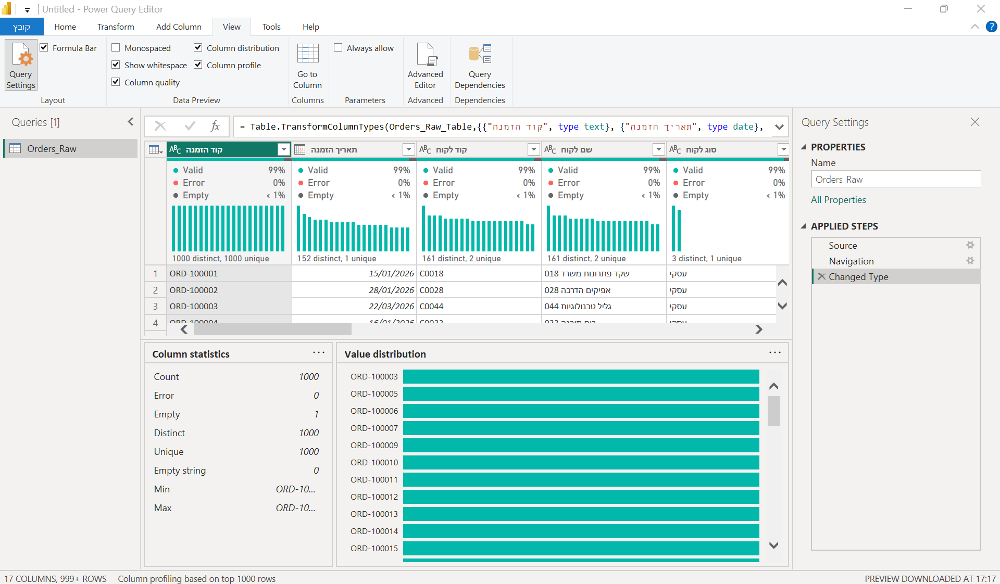
מעל כל עמודה: כמה תקין (Valid), כמה שגוי (Error), כמה ריק (Empty). למטה: סטטיסטיקה של העמודה המסומנת.
למטה משמאל לוחצות על המשפט Column profiling based on top 1000 rows.
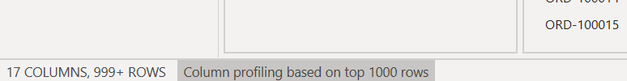
על המשפט הזה לוחצות.
בוחרות Column profiling based on entire data set.
לוחצות על הכותרת קוד תדלוק, ומסתכלות למטה ב־Column statistics.
מה אמור להופיע?Empty 2 · Distinct 2902 · Unique 2897.
קוד תדלוק אמור להיות ייחודי, ולכן ההפרש הזה אומר שיש קודים שמופיעים פעמיים.
Distinct מול Unique.Distinct סופר כמה ערכים שונים יש. Unique סופר כמה ערכים מופיעים פעם אחת בלבד.
בעמודה שאמורה להיות ייחודית, כמו קוד, שניהם צריכים להיות שווים למספר השורות.
למה כל הנתונים? ברירת המחדל בודקת רק את 1,000 השורות הראשונות.
שגיאה בשורה 1,500 לא תופיע, ונחשוב שהכול תקין. בנתוני ההזמנות שבחדר זה בדיוק מה שקורה.
1.3סוגי נתונים
המחיר לליטר מסומן ככסף ($), ולא כמספר רגיל.
איך עושים
מסתכלות על האייקון שליד שם כל עמודה: ABC טקסט, 123 מספר שלם, 1.2 מספר עשרוני, $ מספר עשרוני קבוע (לכסף), ולוח שנה לתאריך.
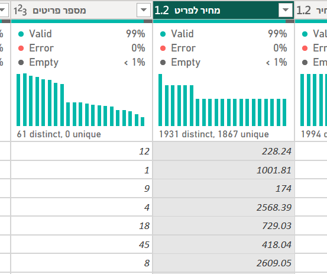
לוחצות על האייקון שליד מחיר לליטר.
בוחרות Fixed decimal number.
בחלון שנפתח לוחצות Replace current.
למה זה חשוב? מספר ששמור כטקסט אי אפשר לסכם, ותאריך ששמור כטקסט אי אפשר לסנן לפי חודש.
פאוור BI מנחש את הסוג לבד (השלב Changed Type), אבל הוא מנחש לפי מדגם, ולכן בודקות.
1.4תיקון ראשון: כפילויות
הקודים הכפולים נמחקו, וביומן יש שלב חדש. ואפשר לחזור אחורה ולראות מה היה.
איך עושים
לוחצות על הכותרת קוד תדלוק. רק היא מסומנת.
Home › Remove Rows › Remove Duplicates.
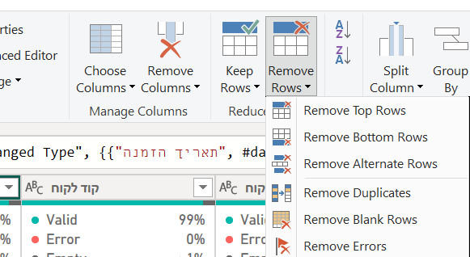
ב־Applied Steps לוחצות על השלב שלפניRemoved Duplicates.
לוחצות שוב על השלב האחרון.
מה אמור להופיע?
ביומן שלב חדש, Removed Duplicates.
כשלוחצות על השלב שלפניו, הכפילויות חוזרות. כשחוזרות לשלב האחרון, הן נעלמות שוב.
כל תיקון הפיך ורשום. באקסל, מחיקה היא מחיקה. כאן התיקון הוא שלב ביומן: אפשר לחזור אחורה, לראות מה היה,
ולמחוק את השלב אם טעינו. והקובץ המקורי לא משתנה בכלל.
מסמנות רק את עמודת הקוד. אם מסומנות כל העמודות, נמחקות רק שורות שזהות בכל העמודות, ושורה כפולה שיש בה הבדל קטן תישאר.
1.5חוזרות לדוח
הנתונים המתוקנים בדוח. הודעה על שגיאה אחת היא צפויה.
איך עושים
Home › Close & Apply (הכפתור הראשון משמאל).
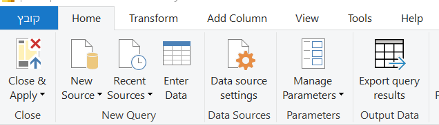
קופצת הודעה על שגיאה? לוחצות Close.
שומרות: File › Save as › Browse this device, בתיקייה Power BI\שיעור 2, בשם תדלוק. בשבוע הבא ממשיכות ממנו.
E, T, L, ונסגר המעגל. השגיאה היא תאריך אחד שכתוב כטקסט. בשגיאות מטפלים בשבוע הבא.
צריכות לחזור לפאוור קוורי? Home › Transform data.
שלב 2 · בחדרים · בזוגות · כ־20 דקות · נתוני הזמנותכרטיס החדר: לגלות, לתקן, ולראות את ההבדל
חנות ציוד משרדי שלחה לנו את ההזמנות של ינואר עד מאי. לפני שנגיד לה כמה מכרה, בודקות אם אפשר לסמוך על הקובץ.
נהגת: משתפת מסך ולוחצת. בת הזוג עושה את אותו הדבר במחשב שלה ומשווה.
נווטת: מקריאה את הצעד ובודקת את ה־✔.
כל אחת בונה על המחשב שלה, מההתחלה ועד הסוף. הקובץ ישמש אתכן בשבוע הבא.
2.1פותחות את ההזמנות בפאוור קוורי
פאוור קוורי פתוח על Orders_Raw, עם פרופיל על כל הנתונים.
איך עושים
מורידות את הקובץ נתוני הזמנות.xlsx, ומעבירות אותו מ״הורדות״ לתיקייה Power BI\שיעור 2.
קובץ חדש בפאוור BI: File › New (או Blank report).
Get data › Excel workbook, ובוחרות את נתוני הזמנות.xlsx.
ב־Navigator מסמנות את Orders_Raw.
לוחצות Transform Data.
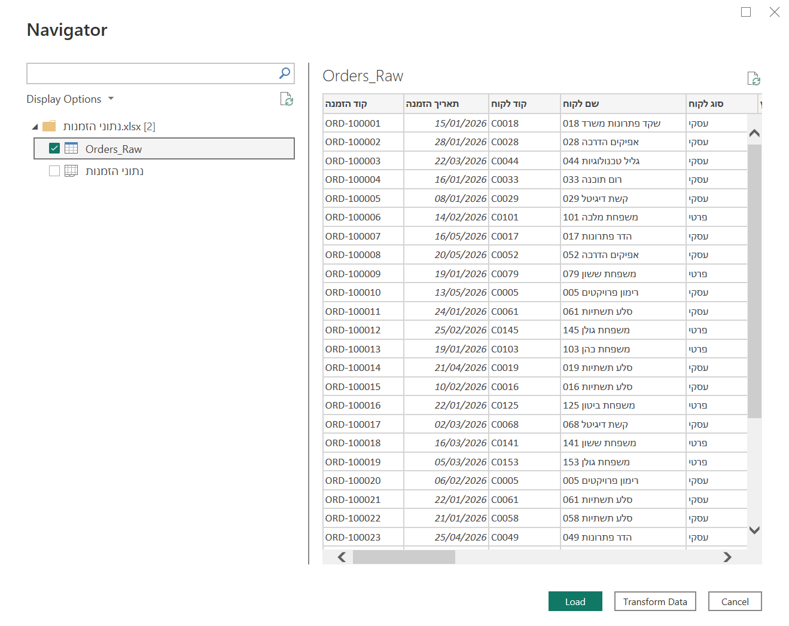
Transform Data, הכפתור האמצעי למטה.
פותחות את הלשונית View, ומסמנות את שלוש התיבות: Column quality, Column distribution, Column profile.
למטה משמאל לוחצות על Column profiling based on top 1000 rows, ובוחרות entire data set.
2.2מוצאות מה שבור
יודעות לומר אילו שלוש בעיות יש בקובץ.
איך עושים
לוחצות על הכותרת קוד הזמנה, ומסתכלות למטה ב־Column statistics.
מה אמור להופיע?Count 2003 · Empty 3 · Distinct 1998 · Unique 1994.
ובראש Value distribution, שלוש הזמנות שהעמודה שלהן ארוכה פי שניים.
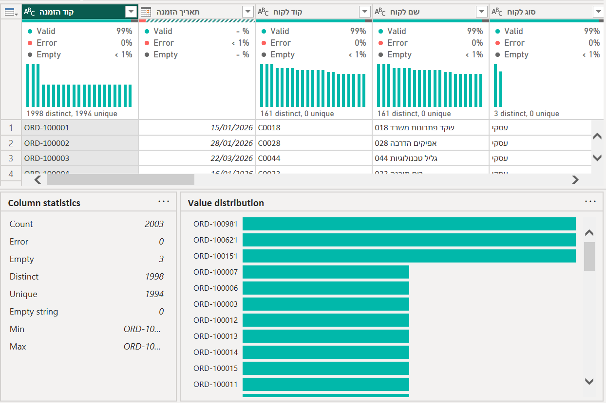
קוד הזמנה אמור להיות ייחודי. שלוש הזמנות מופיעות פעמיים, ושלוש שורות ריקות.
לא יוצא? בדקו שבתחתית כתוב entire data set. עם 1,000 שורות רואים מספרים אחרים.
לוחצות על תאריך הזמנה.
מה אמור להופיע?
בשורת ה־Error שמעל העמודה כתוב פחות מ־1% (< 1%), ולמטה Error 1.
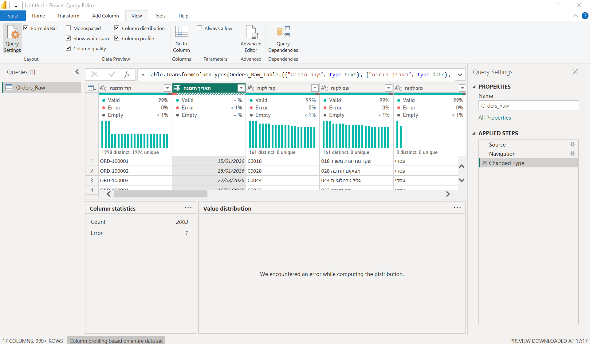
עם 1,000 שורות היה כתוב כאן 0%. השגיאה יושבת אחרי השורה ה־1,000.
אומרות בקול לבת הזוג: מה שלוש הבעיות שמצאנו?
2.3המספרים ״לפני״
טבלה בדוח עם סך המכירות ומספר ההזמנות, לפני כל תיקון.
איך עושים
Home › Close & Apply.
מה אמור להופיע?2,003 rows loaded. 1 error. זו השגיאה בתאריך, וזה צפוי.
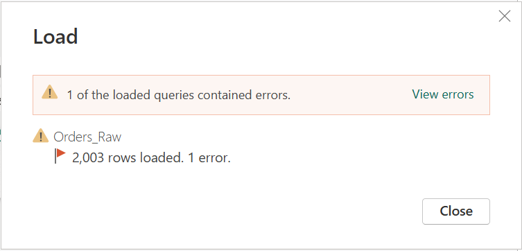
בחלון ההודעה לוחצות Close.
בדוח: קליק על שטח ריק, ובחלונית Visualizations בוחרות Table (האייקון של טבלה).
מסמנות בחלונית Data את סך הכל מחיר.
מסמנות את קוד הזמנה.
בחלונית Visualizations, בשדה Columns: לוחצות על החץ ליד קוד הזמנה, ובוחרות Count. (ברירת המחדל מציגה רשימה של כל הקודים, וזה לא מה שרוצות.)
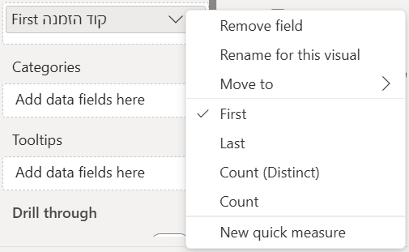
רושמות בצד את שני המספרים שבטבלה, על דף או בטלפון. עוד מעט הם ישתנו.
מה אמור להופיע?₪ 11,377,566.3 ו־2000. זה מה שרשמתן?
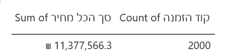
למה טבלה ולא Card? ה־Card מעגל לבד: 2,000 הופך ל־2K, וגם 1,997 יוצא 2K.
רוצות לראות בדיוק כמה השתנה, ולכן טבלה.
🔄 מתחלפות: הנהגת מפסיקה לשתף, והשנייה משתפת את המסך שלה.
2.4מתקנות: שורות ריקות וכפילויות
ביומן שני שלבים חדשים: Removed Blank Rows ו־Removed Duplicates.
איך עושים
חוזרות לפאוור קוורי: Home › Transform data.
לוחצות Home › Remove Rows › Remove Blank Rows.
לוחצות על הכותרת קוד הזמנה. רק היא מסומנת.
לוחצות Home › Remove Rows › Remove Duplicates.
מה אמור להופיע?
ב־Applied Steps: Removed Blank Rows, ומתחתיו Removed Duplicates.
Remove Blank Rows מוחק רק שורות שריקות לגמרי, בכל העמודות. שורה שחסר בה ערך אחד נשארת. בה נטפל בשבוע הבא.
2.5המספרים ״אחרי״
אותה טבלה בדוח, עם מספרים חדשים.
איך עושים
Home › Close & Apply.
הודעת השגיאה תופיע שוב, כי התאריך עוד לא תוקן. לוחצות Close.
מסתכלות על הטבלה בדוח.
מה אמור להופיע?₪ 11,365,128.91 ו־1997.
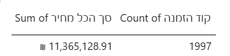
שאלה לחזרה מהחדר: 2,003 ← 2,000 ← 1,997. מה קרה בכל חץ?
שומרות: File › Save as › Browse this device, בתיקייה Power BI\שיעור 2, בשם הזמנות.
בשביל זה מטייבים. בלי התיקון, החנות הייתה חושבת שמכרה ב־12,437 ₪ יותר, ושהיו לה שלוש הזמנות שלא קרו.
שלוש שורות כפולות, ובדוח כבר יש מספר לא נכון.
סוגי נתונים למחירים אם נשאר זמן
שתי עמודות המחיר מסומנות ככסף ($).
איך עושים
חוזרות לפאוור קוורי: Home › Transform data.
לוחצות על האייקון 1.2 ליד מחיר לפריט ← Fixed decimal number ← Replace current.
אותו דבר ב־סך הכל מחיר.
Home › Close & Apply.
שומרות שוב: File › Save.
מה אמור להופיע?
אייקון $ ליד שתי העמודות. המספרים בטבלה לא משתנים.
לא הספקתן? זה בסדר. בשבוע הבא כרטיס החדר מתחיל בזה.
✔ סיימתן את החדר: גיליתן, תיקנתן, טענתן, וראיתן את ההבדל. חוזרות למיט.
שלב 3 · י״ב בלבד · עד השיעור הבאבדיקה של כל המשתנים במסד שלכן י״ב
כל עמודה במסד שלכן בסוג הנכון, ושלושה דברים שמצאתן.
בודקות עמודה אחרי עמודה
איך עושים
פותחות את המסד שלנו - שיעור 1 (מהשבוע שעבר), ו־Home › Transform data.
אם לא שמרתן, טוענות מחדש, הפעם עם Transform Data.
פותחות את הלשונית View, ומסמנות את שלוש התיבות.
למטה משמאל לוחצות על Column profiling based on top 1000 rows, ובוחרות entire data set.
עוברות עמודה אחרי עמודה, וכל עמודה בודקות בארבע השאלות שבטבלה למטה.
לכל עמודה שהסוג שלה לא נכון: האייקון ליד השם ← הסוג הנכון ← Replace current.
Home › Close & Apply.
שומרות: File › Save.
מה בודקות
איפה רואים
מה מחפשות
סוג
האייקון שליד שם העמודה
מספר שמופיע כ־ABC. תאריך שהוא טקסט. קוד (מיקוד, ת״ז) שהפך למספר, ואיבד את האפסים שבהתחלה. את זה מתקנות.
פיזור
הגרף שמעל העמודה, ו־Value distribution
ערך אחד שקופץ מעל כל השאר. קטגוריה שכתובה בשתי צורות. מספר שלא הגיוני (גיל 200, מחיר שלילי).
שגיאות וריקים
Valid · Error · Empty
איפה יש Error, איפה Empty, ובכמה שורות.
ייחודיות
Count · Distinct · Unique
עמודה שאמורה להיות ייחודית (מזהה) ו־Distinct שלה קטן מ־Count. ועמודה שכמעט כולה ערך אחד.
מה מגישות בקלאסרום
צילום מסך של פאוור קוורי, עם הפרופיל פתוח ועם שלבי ה־Changed Type ביומן.
שלושה דברים שמצאתן, משפט לכל אחד. בשבוע הבא הם יהיו השורות הראשונות בטבלת התיעוד.
לא מצאתן אף בעיה? זה קורה במסדים ממשלתיים מסודרים. אז מחפשות בעיות עדינות יותר:
עמודה שכמעט כולה ריקה, קטגוריה שכתובה בשתי צורות, מספר שלא נראה הגיוני. ואם עדיין אין, כותבות את זה, עם הצילום שמוכיח.
המסד שלכן מגיע בכמה קבצים, אחד לכל שנה?
לא מתחילות לתקן. קודם מאחדות את כל השנים לטבלה אחת, ורק אחר כך בודקות ומטייבות, פעם אחת לכל השנים.
את האיחוד עושות איתי, בזמן הפתוח אחרי השיעור או בפגישה האישית. עד אז בודקות שכל הקבצים נפתחים, ושבכולם אותן עמודות.
נתקעתי
כל אלה קרו למורות בקורס המקורי, או לנו כשהכנו את השיעור.
לחצתי Load במקום Transform Data
לא נורא. Home › Transform data פותח את פאוור קוורי על אותם נתונים.
אין לי את Column profile
הוא בלשונית View, לא ב־Home. מסמנות את שלוש התיבות.
המספרים שלי שונים מה־✔
כמעט תמיד: בתחתית כתוב עדיין top 1000 rows. לוחצות ועוברות ל־entire data set.
שימו לב: בכל פעם שפותחים את פאוור קוורי מחדש, זה חוזר ל־1,000. בודקות שוב.
אחרי התיקון הספירה לא 1997
שלושה דברים לבדוק: ב־Remove Duplicates סומנה רק העמודה קוד הזמנה. ביומן יש גם Removed Blank Rows.
ובטבלה בדוח כתוב Count, ולא Count (Distinct).
אין כפתור לשינוי סוג, או שהוא נראה אחרת
במסך קטן הכפתורים מתכווצים לאייקון עם חץ קטן. הדרך הבטוחה: האייקון שליד שם העמודה עצמה.
קפצה הודעה על שגיאות אחרי Close & Apply
זה צפוי היום. השגיאה בתאריך עוד לא תוקנה. לוחצות Close. בשבוע הבא היא תיעלם.
סגרתי את פאוור קוורי ב־X, ועכשיו יש פס צהוב
השינויים לא נשמרו בדוח. לוחצות על Apply changes בפס הצהוב.
בטבלה בדוח מופיעה רשימה ארוכה של קודים
פאוור BI לא סוכם טקסט לבד. בחלונית Visualizations, החץ ליד קוד הזמנה ← Count.
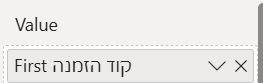
אם כתוב First, גם זה לא נכון. מחליפות ל־Count.
לחצתי על שלב באמצע היומן, ועכשיו הכול נראה אחרת
הטבלה מציגה את הנתונים כפי שהיו באותו שלב. לוחצות על השלב האחרון ברשימה. פעולה חדשה, כשמסומן שלב באמצע, תיכנס לאמצע היומן.
Ctrl+C / Ctrl+V לא עובדים
נכון. פאוור קוורי הוא לא אקסל: לא מקלידים בתאים ולא מדביקים. כל שינוי נעשה בפעולה מהתפריט, וכך הוא נרשם ביומן.